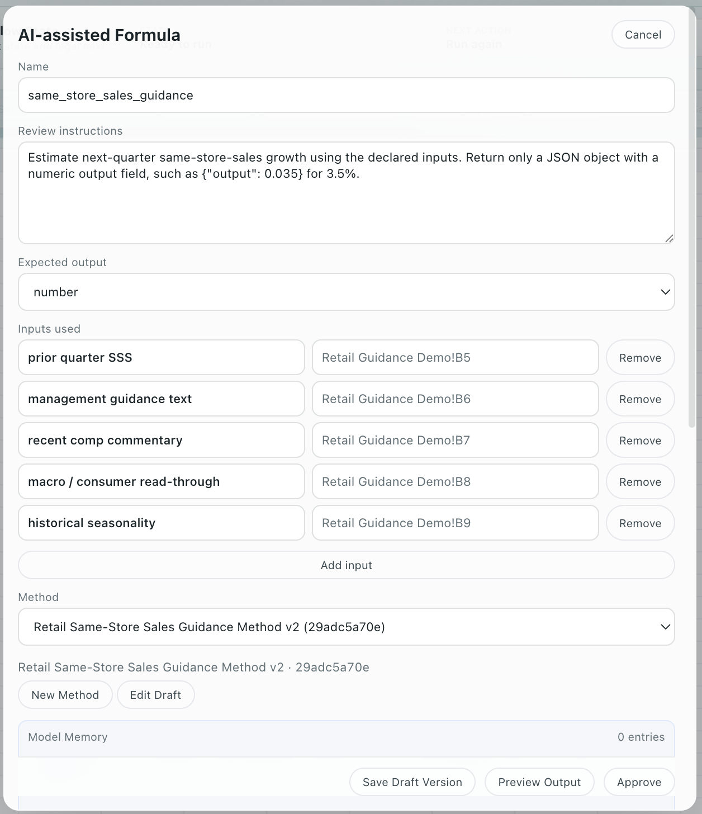

fin123
Work the way you think.
The future of investment research is not better spreadsheets.
It is better thinking.
Modern investment teams do not manage spreadsheets. They maintain living Models.
fin123 is the first operating system for institutional investment research.
Test ideas. Understand what changed.
Keep what matters. Walk away from the rest.
Work the way you think, not the way spreadsheets, folders, slides, chat, and memory force you to work.
Built for portfolio managers and investment teams.
The Model is the thesis.
A serious investment thesis is not a file. It is a living Model: assumptions, evidence, Methods, outputs, and judgment moving together.
The analyst improves the Model. Everything else follows.
Stay inside the work
Use the familiar Analyze grid, imported Excel models, formulas, scenarios, Results, and explicit Model runs without turning the browser into the source of truth.
Keep the thinking intact
The evidence, assumptions, Methods, outputs, Timeline, Report, Replay, and Audit stay attached to the Model instead of scattering across files, email, slides, and chat.


=DATA() and =AI()
functions built in. AI Formula produces typed outputs; the Model keeps the reasoning attached.
Inside a Repository, fin123 keeps the Model, evidence, assumptions, Methods, Results, Timeline, Report, Replay, and Audit connected to the same analytical thread.
Explore is where ideas become convictions.
Try an idea. See what changed. Compare alternatives. Keep what matters. Walk away from the rest.
Start with the thought
"Lower Services growth by 2%."
"Compare this to last quarter."
"Show me what changed."
See the impact immediately
fin123 turns analyst intent into governed Model operations, then shows the change and the proof.
Keep only what earns it
Commit what matters. Keep exploring. Or leave the idea behind.
Explore is the analyst's canvas: fast enough for real thinking, structured enough that evidence, comparison, Results, Timeline, Replay, and Audit remain available as proof-on-demand.
Methods capture how your firm thinks.
Every investment firm has a process. Few can preserve it.
Your Models are assets.
Your Methods are your firm's intellectual property.
Method is reusable judgment.
How your team evaluates guidance, normalizes margins, interprets tone, and underwrites downside.
AI Method supports AI Formula.
But Method is bigger than AI and bigger than prompt storage.
The analyst still owns judgment.
Methods preserve intent so judgment can be reviewed, reused, and improved.

Typed research logic inside the Model.
=AI() formulas live in the Analyze grid and produce Results from Method-backed reasoning.

How your firm thinks, preserved.
Methods preserve the way your team thinks so judgment can be applied again without becoming tribal knowledge.
Think in investment language.
Analysts should be able to say what they mean. fin123 turns analyst intent into governed Model changes and shows the proof.
Lower Services growth by 2%.
Change the Model in the language of the thesis.
Compare this to last quarter.
Compare against Model state, evidence, assumptions, and Results.
Show me what changed.
See movement in assumptions, outputs, evidence, and belief.
Explain why EPS moved.
Connect the answer back to the Model, Method, evidence, and proof.
Cells, ranges, formulas, lineage, and internal IDs still exist. They are proof, diagnostics, and debugging tools. They are not the language of the thesis.
Your research should not sleep because you did.
Wake up to refreshed Models, new evidence, changed assumptions, and everything that deserves your attention.
Headless runs can refresh evidence and prepare Model updates overnight or on schedule, without making the PM spend the first hour rebuilding yesterday's work.
The analyst still decides what to keep. Overnight preparation is not hidden canonical mutation and not auto-promotion.
Everything else follows.
Because the reasoning happened in fin123, the institutional record follows automatically.
Timeline
Belief evolution emitted from Model work: what changed, when, and why.
Memory
Reasoning remembered because it is attached to assumptions, Methods, evidence, and Models.
Report
Communication of the current view, backed by Results and evidence.
Audit / Replay / Provenance
Proof-on-demand for trust, review, diagnostics, and oversight.
Governance is exhaust, not the product. The desired user experience is: I am improving the Model.
Why serious teams move faster.
They preserve reasoning.
Not files.
They test ideas.
Not spreadsheets.
They improve Models.
Not reports.
They communicate conviction.
Not documentation.
Built by a former PM who spent 15 years building buyside spreadsheets and 15 years writing production software for Wall Street.
Why this has to exist.
Investment research has always been programming. Nobody built the operating system around it.
That is why analysts still maintain billion-dollar investment theses with spreadsheets, PowerPoint, chat, folders, and memory. We think there is a better way.
What changed?
The morning question
See the assumptions, evidence, and outputs that moved.
Why did it change?
Reasoning attached
The evidence and analytical thread stay with the Model.
Can I trust it?
Proof-on-demand
Replay, Audit, provenance, and evidence are available when needed.
What does the analyst believe now?
Current thesis
The Model carries the current view, not a stale file copy.
What do we do next?
Attention
PMs see what needs review before the morning meeting.
What should we keep?
Judgment boundary
The analyst decides what becomes the accepted Model state.
You update beliefs. You do not write reports.
You communicate what changed.
Bring Your Model.
Analysts should not have to rebuild working Excel models to get the operating system around them.
- Import existing Excel models into a Repository instead of rebuilding them.
- Preserve formulas, Bloomberg links, Visible Alpha links, and existing file structure.
- Analyze in a familiar grid with
=DATA()and=AI()built in. - Use Results, Timeline, Report, Replay, and Audit as emitted surfaces of Model work.
- Add Sheet Warnings, evidence, versioning, and proof-on-demand without breaking analyst flow.
Why fin123 is different
Serious teams do not need more places to put research. They need a better way to think, test, maintain, and communicate it.
Most tools manage files.
fin123 maintains the investment thesis.
Most tools make artifacts.
fin123 emits Timeline, Memory, Report, Audit, Replay, Provenance, and Governance from the work.
Most AI generates answers.
fin123 keeps judgment attached to the Model.
Most platforms force process.
fin123 lets analysts work the way they think.
This is what software engineering got decades ago. Programs evolve. Existing work has to be understood, tested, maintained, and improved. Institutional investment research deserves the same class of system.
One reasoning substrate. Four desks.
Analyst
Test ideas, preserve reasoning, understand inherited Models, and move faster.
PM
See what changed, why it changed, whether to trust it, and what needs attention.
Head of Research
Institutionalize Methods, reusable judgment, analytical continuity, and firm IP.
Oversight
Use Replay, Audit, provenance, and governance as proof-on-demand.
What sits inside the operating system
Analyze Grid
A familiar grid for Model work, not the whole product boundary.
=DATA()
=DATA(...) is a native function inside the Analyze surface.
=AI() / AI Formula
=AI(...) produces typed Model outputs from Method-backed reasoning.
Method
Reusable firm reasoning, versioned and reviewable so judgment survives time and scale.
Results
Typed outputs from Model execution.
Timeline
Belief evolution emitted from meaningful Model changes.
Report
Communication generated from Results, evidence, and current reasoning.
Replay / Audit
Proof-on-demand for outputs, evidence, and Model operations.
Sheet Warnings
Formula drift, hardcodes, and copy errors are surfaced.
fin123 is software above prime brokers. It is not a prime broker, custodian, clearing system, settlement system, financing system, or live trading venue.
Get started
Open the hosted app: app.fin123.dev
Request a walkthrough: Email jedgore@reckoningmachines.com
fin123
fin123 is the investment research operating system.